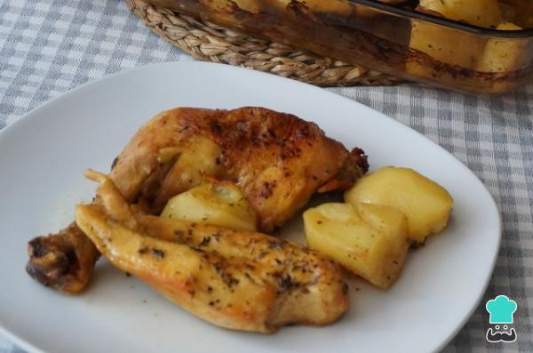

Pollo al horno con cerveza

Quisimos hacer un platillo jugoso y con mucho sabor que hiciera de la comida un momento delicioso y especial.
Así, esta receta de pollo al horno con cerveza es, además de riquísima, súper sencilla y rápida de hacer.
El pollo al horno tiene muchas variantes y formas de prepararse. Además, puesto que todo le queda muy bien, lo podemos acompañar con lo que queramos, como verduras o champiñones.
En este caso, hemos decidido hacer pollo al horno con patatas, una receta clásica que, con la salsa de cerveza, quedará genial.
Ingredientes
- 1 pollo
- 4 patatas
- 1 lata de cerveza
- 1 puñado de orégano
- 1 pizca de pimienta
- 1 puñado de tomillo
- 1 pizca de sal
- 1 chorro de aceite de oliva
Pasos a seguir:
- Para hacer pollo al horno con cerveza, precalentamos el horno a 180º C y configuramos para que caliente arriba y abajo. A continuación, troceamos, limpiamos el pollo y lo ponemos en una bandeja de horno.Por otro lado, pelamos las patatas, las cortamos en cuartos y las añadimos a la bandeja con el pollo.
- Condimentamos el pollo y las patatas con la pimienta, el orégano y el tomillo. Añadimos un poquito de sal y aceite. Mezclamos todo y vertimos la lata de cerveza en la bandeja.
- Metemos la bandeja de pollo al horno y lo dejamos cocinar. Durante el horneado, iremos mojando el pollo con la salsa. Una vez pasados 30 minutos, le damos la vuelta a las piezas de pollo. Lo dejamos hasta que el pollo quede dorado y las patatas estén tiernas, unos 20-30 minutos más.
- Cuando esté listo, lo sacamos del horno. ¡Nuestro pollo al horno con cerveza estará listo para servir! Asimismo, puedes refrigerarlo y calentarlo en el horno unos minutos antes de servirlo.